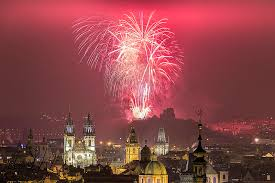

новорічні феєрверки
Новий рік
У більшості давніх народів святкування Нового року збігалося з початком відродження природи й відбувалося зазвичай до березня. Усі язичницькі народи ознаменовували його службовими обрядами богам, урочистими приношеннями, а також забавами. Давні єгиптяни відзначали початок нового року святом відродження Осіріса. У Стародавній Греції народ і жерці, надягнувши на себе маски, влаштовували на вулицях ходу з піснями й танцями. Жінки на прооханих вечорах ворожили. В Україні саме у січні найбільше релігійних свят. Це пов'язано із новорічними обрядами і з тим, що взимку люди менше працювали коло землі.